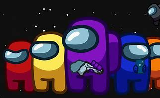
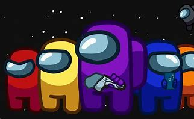
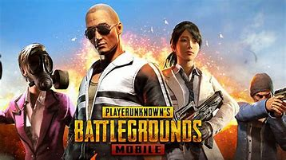
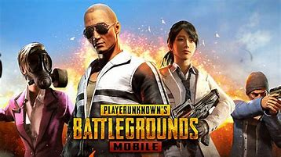

5 dos melhores jogos de 2022
Confira alguns dos melhores jogos para Android para você jogar este ano! Jogos de ação que fazem sucesso, sendo os preferidos o Garena Free Fire e a versão para celular de Call of Duty. A nostalgia também marca presença com o jogo dos Cavaleiros do Zodíaco, o Saint Seiya Awakening: Knights of the Zodiac. O sucesso de Among Us também continua forte ao longo do ano. A ordem dessa lista, não foi definida por critérios pessoais ou arbitrários, fiz uma lista com base em um pesquisa aprofundada ;)
1. Free Fire


O jogo é no gênero Battle Royale e você cai de paraquedas numa ilha paradisíaca para tentar sobreviver. O jogo é bem rápido. São 49 rivais e um máximo de 10 minutos para completar a missão de eliminar todos os outros adversários.
Mais de 1 bilhão
Ação
Online
Sim
Video ilustrativo do jogo
2. Call of Duty Mobile
É a versão para celular do jogo de tiro em primeira pessoa que já era um sucesso na versão para console. Baseado em combates da infantaria na Segunda Guerra Mundial, Call of Duty na variação mobile tem o mesmo modo clássico de combate 5x5 e o modo Battle Royale contra 99 adversários.
Mais de 100 milhões
Ação
Online
Sim
Video ilustrativo do jogo
3. Saint Seiya Awakening: Knights of the Zodiac
Use a estratégia para montar a sua equipe dos Cavaleiros do Zodíaco e participe de combates incríveis. O jogo é em 3D e tanto a trilha sonora quanto os dubladores japoneses são os originais do anime, ou seja, nostalgia pura.
Mais de 5 milhões
RPG
Online
Sim
Video ilustrativo do jogo
4. Among Us
 

Jogo que foi um fenômeno em 2020, Among US continua juntando milhares de pessoas para batalhas de estratégia fantásticas em 2021. O game consiste em um grupo de pessoas online reunidas em uma sala, onde duas delas são aleatoriamente colocadas como impostores, capazes de matar outros personagens ao longo das partidas. O grupo se reúne para apontar quem eles acham que são os impostores. Mentiras, traições e muita estratégia é o que te espera em Among Us.
Mais de 500 milhões
Estrategia
Online
Sim
Video ilustrativo do jogo
5. PUBG Mobile
 

O famoso jogo PlayerUnknown's Battlegrounds ganhou uma versão exclusivamente mobile que agradou jogadores ao redor do mundo. Neste battle royale para ninguém botar defeito, você tem a chance de tentar sobreviver em partidas com até 100 jogadores.
Mais de 500 milhões
Ação
Online
Sim